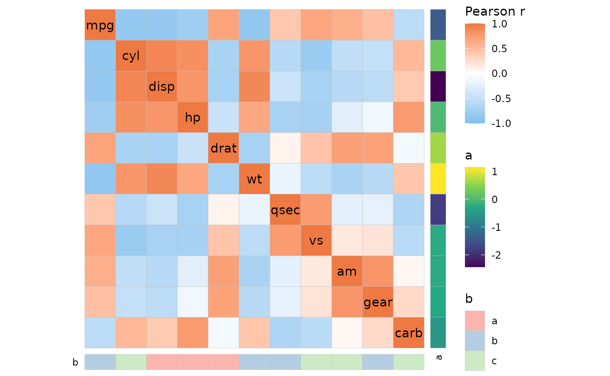
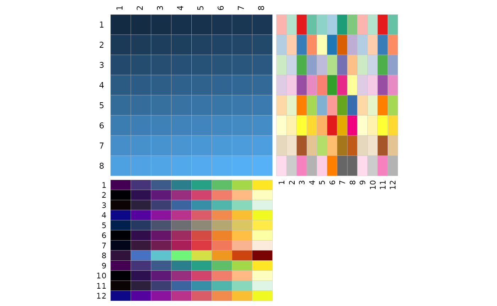
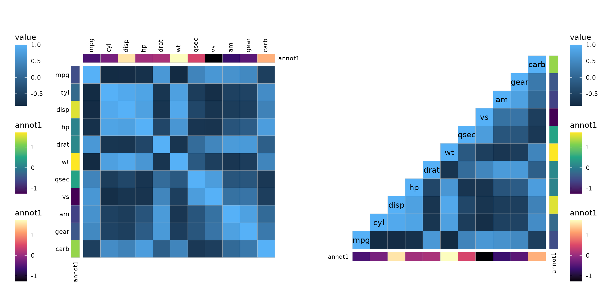
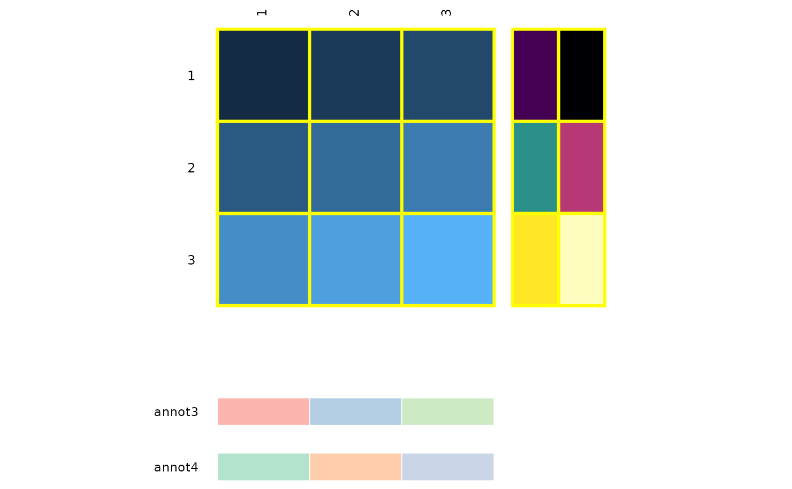
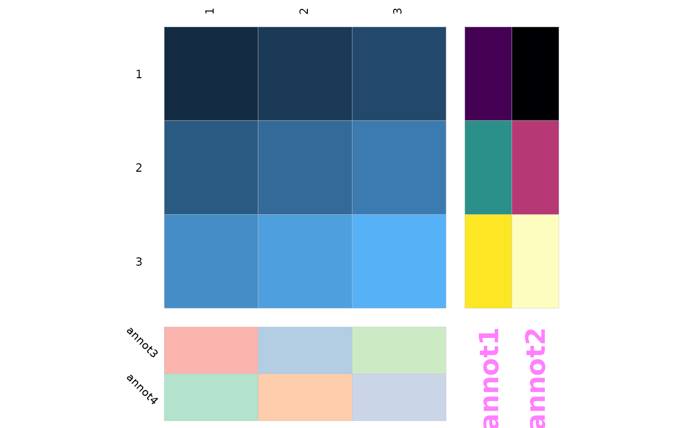
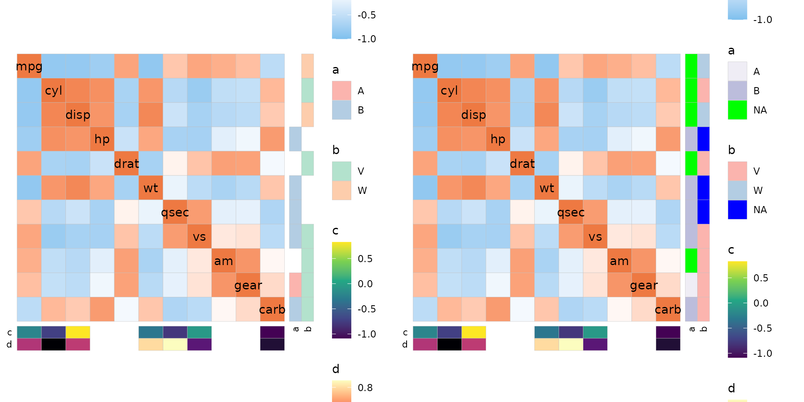

Row and column annotation is added by passing data frames to the
annot_rows_df and annot_cols_df arguments.
There must be either row names or a column named .names
containing the names of the rows/columns that are to be annotated. The
remaining columns are used for annotation.
row_annot <- data.frame(.names = colnames(mtcars), a = rnorm(ncol(mtcars)))
col_annot <- data.frame(b = sample(letters[1:3], ncol(mtcars), TRUE))
rownames(col_annot) <- colnames(mtcars)
ggcorrhm(mtcars, annot_rows_df = row_annot, annot_cols_df = col_annot)
Controlling colours
The colours used for annotation are selected in order from eight
brewer palettes (categorical annotations,
ggplot2::scale_fill_brewer()) or eight viridis options
(continuous annotations, ggplot2::scale_fill_viridis_c()),
starting again from the beginning if there are more than eight
annotations.
# Make 8x8 matrix as some colour scales have a maximum of 8 possible colours
mat_in <- matrix(1:64, nrow = 8, ncol = 8, byrow = TRUE)
# Works without rownames or '.names' column as they are by default set to the same numbers here
row_annot <- as.data.frame(replicate(12, letters[1:8]))
col_annot <- as.data.frame(replicate(12, 1:8))
colnames(row_annot) <- colnames(col_annot) <- 1:12
gghm(mat_in, annot_rows_df = row_annot, annot_cols_df = col_annot,
# Hide the legends
legend_order = NA)
The colours can be changed by passing a named list of
ggplot2 fill scales or strings specifying brewer palettes
or viridis options to the annot_rows_col and
annot_cols_col arguments. Annotations not included in the
list will get the default colours. When supplying a scale object, the
order of the legends may change (by default the main heatmap annotation
is first, followed by row annotations in order and column annotations in
order). The order can be adjusted by using the guide
argument of the scale functions,
e.g. guide = ggplot2::guide_legend(order = 3).
# Make annotation with eight columns, half categorical and half continuous
col_annot <- as.data.frame(replicate(8, 1:8)) %>%
rename_with(function(x) {paste(c("custom", "default"), rep(1:4, each = 2), sep = "")}) %>%
mutate(across(1:4, as.character))
col_annot$.names <- colnames(mtcars)[1:8]
col_annot_fill <- list(custom1 = "Oranges",
custom2 = scale_fill_discrete(guide = "none"),
custom3 = "mako",
custom4 = scale_fill_continuous(guide = "none"))
ggcorrhm(mtcars[, 1:8], annot_cols_df = col_annot,
annot_cols_col = col_annot_fill, legend_order = NA)Annotation positioning
The annot_rows_side and annot_cols_side
arguments control which side the annotation should be placed on (‘left’
or ‘right’ for row annotations, ‘top’ or ‘bottom’ for column
annotation). A triangular layout (for symmetric matrices) limits the
positions to the non-empty sides.
set.seed(123)
annot <- data.frame(.names = colnames(mtcars), annot1 = rnorm(ncol(mtcars)))
plt1 <- gghm(cor(mtcars), annot_rows_df = annot, annot_cols_df = annot,
annot_rows_side = "left", annot_cols_side = "top",
annot_cols_names_side = "right") +
# Adjust legend position and margins
theme(legend.position = "left",
plot.margin = margin(10, 50, 30, 10))
plt2 <- gghm(cor(mtcars), annot_rows_df = annot, annot_cols_df = annot,
annot_rows_side = "left", annot_cols_side = "top",
layout = "br", include_diag = TRUE, show_names_diag = TRUE,
show_names_x = FALSE, show_names_y = FALSE) +
theme(plot.margin = margin(20, 10, 10, 50))
plt1 + plt2
The sizes and gaps between annotations and the heatmap can be
adjusted with the annot_size, annot_dist
(distance from heatmap) and annot_gap (gap between
annotations) arguments.
set.seed(123)
row_annot <- as.data.frame(replicate(4, rnorm(ncol(mtcars))))
rownames(row_annot) <- colnames(mtcars)
ggcorrhm(mtcars, annot_rows_df = row_annot,
legend_order = NA,
# annot_dist controls the distance between the heatmap and the annotation
annot_dist = 0,
# annot_gap controls the gap between annotations
annot_gap = 1,
# annot_size controls the size (width if row, height if column) of the annotations
annot_size = 2)Other arguments to control annotations include
show_annot_names (show/hide names),
annot_legend (show/hide legends), border_col
(cell border colour), and border_lwd (cell border
linewidth). The border arguments are for the main heatmap but are
applied to the annotations as well.
These parameters are applied to both row and column annotations but
can be applied independently for row and column annotation by using the
annot_rows_params and annot_cols_params
arguments. These are named lists where the names specify what to change
(dist, gap, size,
show_names, border_col, and
border_lwd).
df_in <- matrix(1:9, nrow = 3, ncol = 3, byrow = TRUE)
row_annot <- data.frame(annot1 = 1:3, annot2 = 4:6)
col_annot <- data.frame(annot3 = letters[1:3], annot4 = letters[4:6])
gghm(df_in, annot_rows_df = row_annot, annot_cols_df = col_annot,
legend_order = NA,
# border_col and border_lwd control both the heatmap and annotations
border_col = "yellow", border_lwd = 1,
annot_rows_params = list(
# Hide labels
show_names = FALSE
),
annot_cols_params = list(
# 'border_col' and 'border_lwd' control the border colour and linewidth
border_col = "white", border_lwd = .3,
# 'dist', 'gap', and 'size' work as described in the previous chunk
dist = 1, gap = 0.3, size = 0.3
))
Annotation labels
The sizes of the names can be changed using the
annot_names_size argument. Further customisation is
possible by passing named lists of static aesthetics to the
annot_rows_names_params and
annot_cols_names_params arguments. These lists are passed
on to ggplot2::geom_text().
df_in <- matrix(1:9, nrow = 3, ncol = 3, byrow = TRUE)
row_annot <- data.frame(annot1 = 1:3, annot2 = 4:6)
col_annot <- data.frame(annot3 = letters[1:3], annot4 = letters[4:6])
gghm(df_in, annot_rows_df = row_annot, annot_cols_df = col_annot,
legend_order = NA,
annot_rows_names_params = list(
colour = "magenta", alpha = 0.5, size = 7, fontface = "bold"
),
annot_cols_names_params = list(
angle = -45, hjust = 0.7, vjust = 0
))
If the annotation labels are too long and are cut off, the plot
margins can be adjusted by using the ggplot2::theme()
function and its plot.margin argument. Alternatively, the
figure height can be increased, as the heatmap is set to use a fixed
aspect ratio (ggplot2::coord_fixed()). This can be
overwritten by adding ggplot2::coord_cartesian() to the
output plot.
Dealing with missing values
If there are NAs in the annotation they are by default coloured grey.
The colour can be changed using the annot_na_col argument,
or by specifying a colour for the na.value argument in a
ggplot2 scale when supplied using the
annot_rows_col and annot_cols_col arguments.
The annot_na_remove argument can be set to
TRUE to not display the cells at all. If the annotation
data frame does not contain all the names of the axis, those
rows/columns will be left empty.
As a side note, annot_na_remove is by default set to be
the same as na_remove so setting the NAs to be removed from
the main heatmap removes NAs from the annotation unless
annot_na_remove is changed. Similarly, the
annot_na_col argument is also set to by default be the same
as na_col.
set.seed(123)
# Row annotation with NAs
row_annot <- data.frame(.names = colnames(mtcars),
a = sample(c("A", "B", NA), ncol(mtcars), TRUE),
b = sample(c("V", "W", NA), ncol(mtcars), TRUE))
row_fill <- list(a = scale_fill_brewer(palette = "Purples", na.value = "green",
# Adjust the order of the legend
guide = guide_legend(order = 2)))
# Column annotation with missing names
col_annot <- data.frame(.names = sample(colnames(mtcars), 7),
c = rnorm(7),
d = runif(7))
plt1 <- ggcorrhm(mtcars, annot_rows_df = row_annot, annot_cols_df = col_annot,
annot_na_remove = TRUE)
plt2 <- ggcorrhm(mtcars, annot_rows_df = row_annot, annot_cols_df = col_annot,
annot_na_remove = FALSE, annot_rows_col = row_fill,
annot_na_col = "blue")
plt1 + plt2
As can be seen in some plots, the legends may be cut off if there are many annotations. Fitting the legends can be tricky and is covered in the legends article.